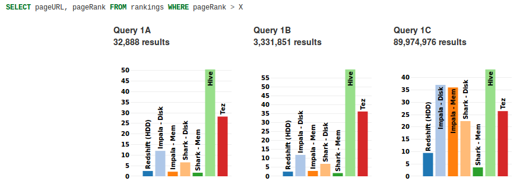
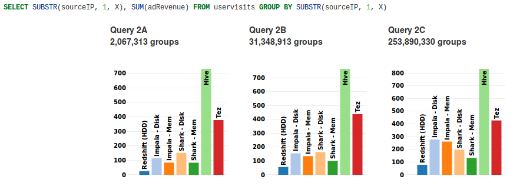
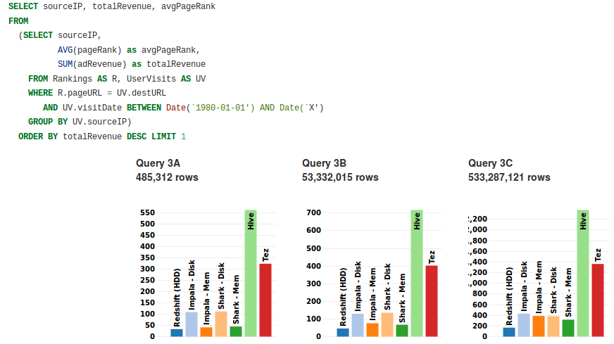

Amazon Redshift
What You Need To Know
PyTN 2014Photo: NASA
Who Is This Guy?
Brian Dailey
CTO & Co-founder at Stratasan
Monkeys around a bit with Python, PostgreSQL,
@byeliad
A little about me, get this out of the way quickly. Stratasan does market research, takes in data and gives a very "bird's-eye" view.
toc
What is Redshift?
Why We Use It
Cost Overview
Rough Benchmarks
Redshift Architecture
I always like to tell you what I'm going to tell you first.
Building Tables
Distribution and Sort Keys
Loading Data
Querying Data
Extracting Data
Optimization Tips
Web UI
What's Redshift?
I'm going to assume you have some idea of what RDBMSs are and how they work.
bizspeak:
Amazon Redshift is a fast, fully managed, petabyte-scale data warehouse service ...
This is the description precisely from Amazon. But it's not really written for you and me.
"It achieves its high performance through extreme parallelism, columnar data storage, and smart data compression." - AirBnB
This gets down to the brass tacks.
Before Amazon released Redshift, a company called ParAccel had built a managed database
platform that was designed for analytics, touted to run on commodity hardware.
Who has a lot of commodity hardware? Amazon made a significant investment in the company,
and used their platform to create Redshift.
Why we use it
It looks a lot like PostgreSQL
Much cheaper than analytic appliances (Vertica et al)
Easy and fast ad-hoc aggregate queries
The learning curve was short for us to get started.
Vertica was fairly expensive, longer learning curve. See the AirBNB writeup.
Since it uses columnar storage, sums, avgs, counts are quite fast.
If this is PostgreSQL:
If PostgreSQL is Robert Pattison, then Redshift...
This is Redshift:
+
Is a wax, not-quite-real uncanny valley copy of Robert fused with an F1 racer.
It looks and smells like PostgreSQL 8.0.2 but there are quite a few subtle differences once you scratch the surface.
What's it Cost?
I mentioned it was cheaper than Vertica, but here are ballpark numbers.
US East (N. Virginia) vCPU ECU Memory (GiB) Storage I/O Price DW1 - Dense Storage dw1.xlarge 2 4.4 15 2TB HDD 0.30GB/s $0.850 per Hour dw1.8xlarge 16 35 120 16TB HDD 2.40GB/s $6.800 per Hour DW2 - Dense Compute dw2.large 2 7 15 0.16TB SSD 0.20GB/s $0.250 per Hour dw2.8xlarge 32 104 244 2.56TB SSD 3.70GB/s $4.800 per Hour
There are some differences in cost based on whether you are
doing dense storage, or dense compute. SSD (DW2) is compute.
Higher cost per TB, but lower cost per node.
Per Terabyte
US East (N. Virginia) Effective Price per TB per Year On-Demand 1yr RI 3yr RI dw1.xlarge $3,723 $2,192 $999 dw1.8xlarge $3,723 $2,192 $999 dw2.large $13,688 $8,794 $5,498 dw2.8xlarge $16,425 $11,018 $5,498
Here you can see the per terabyte cost a little more
clearly. Obviously, the SSD setup (which I'll talk more
about shortly) is higher per TB.
Speed
The $64k question. How fast is it? Now in previous
versions of this talk I've ran my own stats, but I
don't do a great job of that so I'm going to leave it
to some fellows at Berkley.
Scan Query

Redshift is the blue bar on the far left.
A is a small result set.
B is intermediate.
C is ETL-like (spread across several nodes).
Aggregate Query

"Redshift's columnar storage provides greater benefit than in [scan query] since several columns of the UserVistits table are un-used."
Join Query

"Redshift has an edge in this case because the overall network capacity in the cluster is higher."
"Hive, Impala, and Shark are used is because they offer a high degree of flexibility, both in terms of the underlying format of the data and the type of computation employed."
Full Study: https://amplab.cs.berkeley.edu/benchmark/
The authors point out that Hive et al are more flexible. Also, they are open source. You can
run them on your own hardware. Can't do that with Redshift (yet).
AirBnB tested against Hadoop...
AirBnB did some early testing and published their findings.
"Simple range query against a giant table with 3 billion rows, we saw 5x performance improvement over Hive!"
Emphasis not added by me.
Analytics Particularly aggregate queries. Because it's columnar, sums, avgs, etc are particularly fast. Your web application If you're doing a lot of SELECT FROM WHERE ID = then you are gonna have a bad time. It doesn't use indices, so single lookups are dog slow.
The Redshift cluster in it's natural environment consists of a leader node and multiple compute nodes.
Each node in the cluster has its own operating system, dedicated memory, and dedicated disk storage.
Leader Node
Photo: Frederik Magle
The leader node manages the distribution of data and query processing tasks to the compute nodes.
Only created if there are 2 or more nodes. This is what you're talking to and interacting with
via SQL. It plans the queries, distributes it to the compute nodes, and aggregates the results.
It is where all of the pg_ (catalog) tables are found.
If SQL doesn't hit data (e.g., SELECT NOW()) it's run only on the leader node.
Compute Nodes
Photo: Paul Robinson
Does the processing and hands it back to the leader node. Grunts of the Redshift world.
Types of nodes...
XL: 2 cores, 15GiB memory, 3 disk drives with 2TB of local attached storage.
8XL: 16 cores, 120GiB memory, 24 disk drives (16TB)
(New) SSD XL: - 160 GB of SSD storage, 2 Intel Xeon E5-2670v2 virtual cores, and 15 GiB of RAM.(New) SSD 8XL: - 2.56 TB of SSD storage, 32 Intel Xeon E5-2670v2 virtual cores, and 244 GiB of RAM.
This goes back to the dense storage vs. dense compute.
The SSD options were introduced last month. They look awesome.
I've not had a chance to try them yet, but early reports
say they are blazing fast (of course).
Each node has multiple slices (one for each core)
Executes queries in parallel over each slice
Data is divvied up to each slice by a distribution key...
The data on a compute node is distributed across slices.
Slices correspond to the nodes processors, the idea is
that they can be scanned in parallel.
Data is managed so that it is spread evenly across all
slices. You can customize this a bit to optimize table
scans and joins. We'll cover that shortly.
Building Tables
Before you do anything on Redshift you'll need to build your
tables! What options are different than PostgreSQL?
“Amazon Redshift does not enforce unique, primary-key, and foreign-key constraints.”
Anarchy is unleashed! Foreign keys and primary keys
must be enforced by your application. That said, you can
still tell Redshift where they are used and it will
use them to plan and optimize queries.
unsupported types
Arrays
INTERVAL, TIME, TIMESTAMP WITH TIMEZONE
SERIAL, MONEY
XML
UUID
...and more...
Secondly, if you’re migrating from an existing database,
you’ll notice that there are a lot of unsupported
PostgreSQL data types. The ones that hurt the most for
us was SERIAL, since we used that for primary key
columns.
supported types
SMALLINT
INTEGER
BIGINT
DECIMAL
REAL
DOUBLE PRECISION
BOOLEAN
CHAR
VARCHAR
DATE
TIMESTAMP
(New) JSON
It's almost easier to enumerate over
what they DO support. Note that JSON support was added
in September 2013. It stores it inside VARCHAR, much
like PostgreSQL does.
Here are some dragons that bit us.
"CHAR and VARCHAR data types are defined
When you issue a CREATE statement note that length
on these types is in bytes, not characters. If you do
anything with multibyte data, this will silently
truncate your strings. Terrible to debug.
UTF8 up to 4 bytes is supported.
Distribution Key
Default is round robin / even distribution.
Like values can be (approximately) stored together
on node slices.
ALL distribution copies the table to each node.
Aim is to distribute data evenly across slices.
EVEN is the default. Follows a round-robin distribution.
Use this if table is denormalized, doesn't
participate in joins, or doesn't have a clear choice on
dist key.
KEY give you one column and attempts to group like
values together on slices. If you join on a column
frequently, use this.
"ALL distribution is appropriate only for relatively slow
moving tables; that is, tables that are not updated
frequently or extensively. Small dimension tables do not
benefit significantly from ALL distribution, because the
cost of redistribution is low."
In general, if you use KEY you still want to aim for even
distribution!
An example of this would be a table with an
"favorite_color" column. If the values are pretty
evently distributed, then grouping them together means
Redshift has to do less work in copying data around
inside the cluster to perform the aggregate. On the
other hand, if 90% of your table data has a
favorite_color of "red", then the node or slice with the
"red" data is going to have to do a disproportionate
amount of work.
Sort Key
Amazon Redshift stores your data on disk in sorted order according to the sort key.
“Amazon Redshift stores columnar data in 1 MB
disk blocks. The min and max values for each block are
stored as part of the metadata.”
This means that if you have a sort key indicated, Redshift
can skip over swaths of your data to pinpoint exactly where the
value you’re looking for can be found.
Amazon’s webinars often use the example of a “last
updated timestamp” column to demonstrate how this works.
If you are most commonly accessing data based on that
timestamp you can use it as a sort key. When searching
for values, it will only look at nodes, slices, and
blocks that are relevant.
One more thing...
You can't ALTER COLUMN.
Only one ADD COLUMN per ALTER TABLE.
Photo credit: Ben Stanfield
If you have to modify a column, you'll have to add one,
copy the data over, and rename it.
If you need to add multiple columns it may be easier to
just create the new table and copy everything over into
it.
Loading Data Into Redshift
Now that you've created your table structure,
let's talk about how to get data into it.
Your Options
S3
(New) Remote Host (via SSH)DynamoDB
The remote host option was added in November 2013.
Best Practice
S3
(Per Amazon)
I'm going to spend the most time detailing how to get
your data uploaded via S3, since that's what Amazon
recommends as a best practice. It's also the most
straightforward way to get data into Redshift.
s3cmd is your friend.
http://s3tools.org/s3cmd
s3cmd put gigantic_csv_file.csv.part.gz.00000 s3://mybucket/mypath/
You can also use boto, which would allow you to stream
the upload of multiple files in parallel. s3cmd doesn't
yet do that.
You can gzip your files before uploading to save
bandwidth. You can also separate your file into chunks
and Redshift will load them in parallel.
COPY table_name [ (column1 [,column2, ...]) ]
FROM 's3://objectpath'
[ WITH ] CREDENTIALS [AS] 'aws_access_credentials'
[ option [ ... ] ]
Here is the basic COPY syntax. You give the bucket and
path to the file, and your AWS credentials so Redshift
can load it. Note that you really want to do any data
transformations before you load it into Redshift in
bulk.
objectpath is a prefix. Loads in parallel.gzip
encryption
Again, note that the object path is a prefix. If you
have chunked files, you can load in parallel. COPY has
several other options, too. You can load it gzipped, or
load an encrypted file.
Loading via Remote Host
Connect to instances via SSH, executes commands, and loads generated text output.
Uses the clusters public key to connect. Create a JSON
manifest file on S3 that tells Redshift what commands
to run.
Debugging
STL_LOAD_ERRORS
STL_LOADERROR_DETAIL
STL_S3CLIENT
yo
So how do you track down issues when a COPY goes wrong?
These tables are your log file equivalents. They will
tell you what went wrong.
STL_LOAD_ERRORS gives overview, DETAIL gives row
specific information, and S3CLIENT tells you about any
errors connecting to S3.
Debugging
It's a good idea to do a dry run with NOLOAD as you can
snuff out any issues quickly. By default, REdshift will
stop loading after the first error, so you can set
MAXERROR to 0 to see all errors. Just don't forget to
reset that when you are finished testing!
Here are some more gotchas we ran into when loading data
into Redshift.
You need 2.5x data size to load if sorted or to vacuum table.
Date or timestamp columns must be formatted in same way (only defined once).
(ACCEPTANYDATE will load NULL when format does not match.)
ACCEPTANYDATE will effectively set errors to null,
rather than puking and stopping the load. If you have
varying time formats that you want to load into a
datestamp, you will need to do some transformation prior
to loading.
Ingest via SQL
Sure...
You could , but it's going to be slow.
QUERYING DATA
So we've defined our structure and we've loaded some
data. What's next? Queries!
Looks/smells like Postgres 8.0.2.
We're not going to spend a lot of time here because, by
golly, if you've used Postgres much you should be in
familiar territory.
AVG(INT) will return INT.
Note that this is NOT listed in "Features implemented differently."
However, this is one thing I ran into.
Postgres 8 will return a decimal, but Redshift returns
an int truncated.
EXTRACTING DATA
How do we get our data out of Redshift?
unload ('select * from tablename')
to 's3://mybucket/'
credentials 'aws_access_key_id=[your-access-key-id];
aws_secret_access_key=[your-secret-access-key]';
It's pretty easy. Same as COPY, but in reverse. Push the
data back to Amazon S3 for backups or to copy down
locally. UNLOAD has many options, you can compress or
encrypt the data, or specify format.
UNLOAD dumps to multiple files
s3://bucket/table_data_0000
s3://bucket/table_data_0000
One little gotcha is that UNLOAD creates a file for each
slice. So multiple notes are going to mean multiple
files. This is true even if it's a relatively small
query (e.g., "SELECT COUNT()").
...unless you trick it.
unload ('select * from (
select * from ... where ...) limit 2147483647') ...
There is one way around this, but it's not terribly
elegant. That LIMIT is the max unsigned integer.
If it's over that, you are SOL.
But if you're over 5.8GiB, files will still split.
It's also slower.
Because it has to aggregate all of that and it can't do
the UNLOAD in parallel, it'll be slower. It also runs
into the S3 file size limit, which will cause the file
to break into parts.
Optimization
Redshift, like any database platform, can be optimized.
Here are a few tricks that you should know
about.
Workload Manager (WLM)
Controls concurrent queries. Less means more memory per process.
"By default, a cluster is configured with one queue that can run five queries concurrently."
The WLM is kind of a multi-lane queuing mechanism for queries. You
can segment long running queries into one lane, and
shorter ones into another higher-priority lane.
You can create up to 8 queues, and you can allow up to 15
concurrent queries. One strategy is to set the
concurrent queries to 1 when you are running a COPY
statement. That speeds up the load at the cost of making
other queries wait. You can also assign queries at
runtime, or set them up by user.
VACUUM (ANALYZE)
Vacuum early, vacuum often.
Anytime you've made non-trivial changes to data.
VACUUM is expensive. Schedule for slow days.
Only one VACUUM at a time per cluster.
VACUUM doesn't resort unaffected slices.
Debugging VACUUM
svv_vacuum_progress
svv_vacuum_summary
Size your columns appropriately.
Test different configurations!
2 DW1 8XL nodes?
16 DW1 XL nodes?
5 DW2 XL nodes?
Redshift is cost-effective.
"In fact, our analysts like Redshift so much that they don’t want to go back to Hive and other tools even though a few key features are lacking in Redshift. Also, we have noticed that big joins of billions of rows tend to run for a very long time, so for that we’d go back to hadoop for help." -- AirBnB
"Oddly enough, Redshift isn’t going to sell because devs think it’s super-duper-whizz-bang. It’s going to sell because it took a problem and an industry famous for it’s opaque pricing, high TCO, and unreliable results and completely turned it on its head." -- AK Tech Block


 +
+